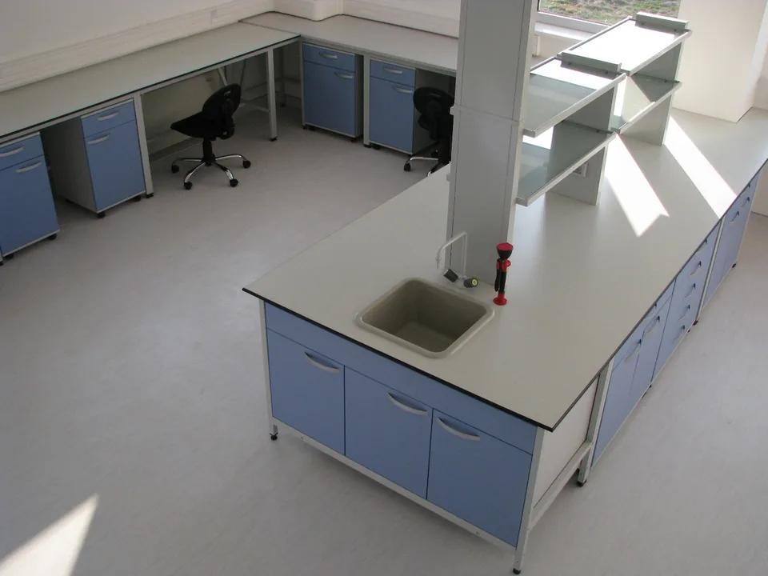

Laboratory Benches
Laboratory benches come in a variety of dimensions, shapes, equipment and purposes. Depending on where they are installed, they can be wall benches (with their back against the wall) or central benches (in the middle of the room, as an island). By purpose, they can be work benches, sink benches, anti-vibration benches or writing desks. As for dimensions, the standard heights are 750 mm for seated work and 900 mm for standing work, with depths of 600, 750 and 900 mm and lengths to suit the user’s needs. The standard bench frame sizes are 900, 1200, 1500 and 1800 mm; longer runs are made by combining and adding these. What is not an option or a choice is the quality of the materials. The frames are made of steel, tested to the SRPS EN 13150 standard, and as such provide the durability required by even the most demanding laboratories. The frames are protected with an anti-corrosion epoxy coating and always stand on levelling feet.
Most of the work is usually done at the central benches, so they are also the best equipped: the most common configuration has a central two-level reagent shelf, power outlets and a sink fitted at the end of the bench.